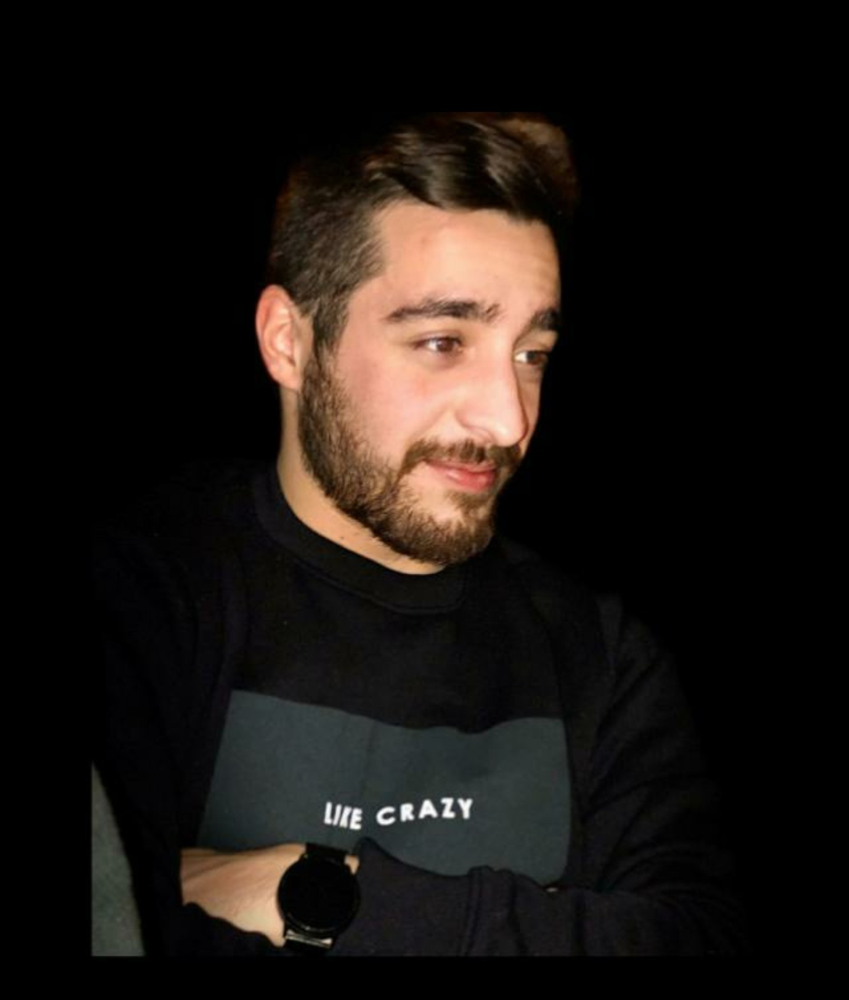

Scorri giu
DAVIDE FRATTINI
davide.frattini1@gmail.com

Ciao,sono Davide e ho 25 anni, sono nato il 02/09/1998. Ho lavorato dai 18 anni nell'informatica partendo dall'helpdesk e finendo come system administrator in
importanti aziende di Milano.
Ho deciso di partecipare a questo corso per cambiare la mia vita e essere più autonomo nel mio lavoro.
i miei hobby sono:
- calcio, grande tifoso dell'Inter
- film
- gaming
Clicca qui per il mio account linkedin
Clicca qui per il mio account GitHub
Sono alto 1.65, occhi marroni e capelli castani, vesto generalmente di colori scuri.
Le mie Competenze:
- Certificazione Microsoft MS-900
- Certificazione Microsoft Azure AZ-900
- Certificazione Microsoft MS-100
- Esperienza Linux
Competenze da acquisire:
- Esperienza con VsCode
- Linguaggio HTML
- Altri linguaggi di programmazzione
- Autonomia e sicurezza nella programmazzione